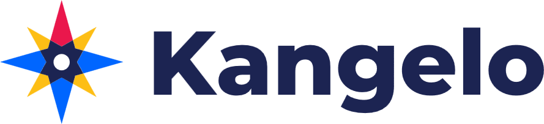

Další studie

Jak Ondra ve spolupráci s agenturou AONITY vyřešili nedostatek času majitele na cestách, zautomatizovali voiceovery pomocí umělé inteligence a vytvořili virální sérii, která ovládla Instagram.
Organických zhlédnutí na IG
Vytvořených videí
Zhlédnutí nejlepšího videa
Majitel značky Kangelo je neustále na cestách a buduje byznys. Měl skvělé téma, potřeboval být vidět na Instagramu, ale narazili jsme na obrovskou bariéru: Neměl čas ani klid na to, aby pravidelně namlouval voiceovery do videí. Čekat týdny na to, až se dostane k mikrofonu, by celý projekt zabilo hned na začátku.
Potřebovali jsme najít způsob, jak zachovat jeho autentický projev a osobní brand, ale zároveň ho úplně vyjmout z produkčního procesu.
Abychom doručili maximální výsledky, spojili jsme síly. Díky této úzké spolupráci jsme postavili systém, který fungoval naprosto autonomně, aby klient mohl v klidu cestovat.
Příprava textů a A/B testing. Abychom maximalizovali šanci na virální úspěch, scénáře se vytvářely na základě přísného A/B testování hooků na začátku videí. Tuto klíčovou část si vzal na starost Vojta Hradský z agentury AONITY, se kterým jsme ladili strukturu tak, aby algoritmus Instagramu videa doporučoval.
Z pouhých pár minut starších nahrávek jsme v nástroji ElevenLabs vytvořili dokonalý AI model klientova hlasu. Ondra z Oživto (Ondřej Parýzek) následně do tohoto nástroje sázel scénáře a kompletně generoval voiceover. Kvalita byla natolik špičková, že diváci v komentářích absolutně nepoznali, že na ně mluví umělá inteligence.
Abyste udrželi pozornost diváka u cestovatelských zajímavostí, nestačí jen hezký hlas. Ondra z Oživto si vzal na starost finální tvorbu videí a kompletní střih. Videa obohatil o propracované animace památek, lanovek, říčních proudů i balvanů (jako u virálního videa o norském Kjeragboltenu). Díky těmto poutavým vizuálním prvkům bylo pro uživatele extrémně snadné dokoukat videa až do konce.
Z pouhých 6 publikovaných Reels jsme dokázali vygenerovat přes 85 000 zhlédnutí čistě organickou cestou (bez jediné koruny investované do placené reklamy). Absolutním vítězem se stalo video o slavném norském balvanu Kjeragbolten, které samo o sobě vystřelilo na 56 600 zhlédnutí.
Díky kombinaci úderného scénáře od AONITY a vizuálně chytlavých animací doplněných o AI voiceover, za kterými stojí Ondra z Oživto, jsme dokázali zaujmout obrovské publikum.
Graf níže ukazuje výkon všech 6 vytvořených videí. Je krásně vidět ten obrovský virální výstřel u prvního videa, zatímco ostatní videa (kde jsme také implementovali AI hlas a strategické scénáře) si drží stabilní a velmi pěkná čísla v tisících organických zhlédnutí.
Mrkněte se sami na video o Kjeragboltenu. Poznali byste, že tento voiceover generovala umělá inteligence?
Přehrát video na InstagramuVyužijte nejmodernější AI technologie a naši produkci. Zautomatizujeme vaši tvorbu, aniž byste ztratili autenticitu.
Domluvit nezávazný hovor